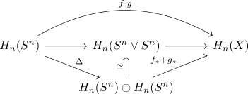

hurewicz homomorphism
Definition / Proposition
The hurewicz homomorphis is defined as natural transformation
\begin{align*}
\pi_*(-) \rightarrow H_*(-)
\end{align*}
corresponding under the yoneda lemma to a generator of $H_*(S^*)$
Proof
Old
Definition / Proposition
Let $(X,x)$ be a topological space, then for $n \geq 1$ the hurewicz homomorphis is defined as
\begin{align*}
h: \pi_n(X,x) \rightarrow& H_n(X) \\
[f(S^n, 1) \mapsto (X,x)] \mapsto& f_*[S^n]
\end{align*}
see:
- homotopy group
- homology functor
- where $[S^n]$ is the generator of H_n(S^n)
Proof
welldefined
follows from singular homology as homotopy invariant functor
neutral element
follows as
\begin{align*}
h_n(\mathrm{const}_x) = 0
\end{align*}
as it factors throuh $H_n(*, \mathbb{Z}) = 0$
multiplicative
Let $f,g \in \pi_n(X,x)$ then the multiplication is given by $f \cdot g: S^n \rightarrow S^n \vee S^n \rightarrow X$ (the composition of $f \vee g$ after the pinch map) showing that

commutes, where the bottom iso follows from reduced singular homology and wedge product as $n \geq 1$ holds.
Here the generator $[S^n]$ gets send to $([S^n], [S^n])$ and then to
\begin{align*}
f_*([S^n]) + g_*([S^n])
\end{align*}